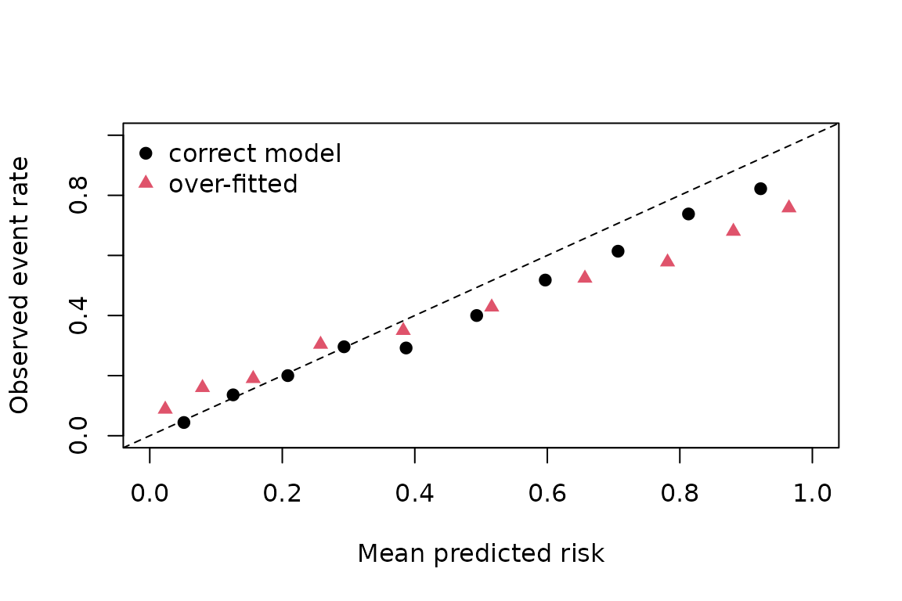

Reported predictive performance is often too optimistic. The usual causes are information leaking from test data into training, and choosing a model on the same data used to score it. This vignette shows how to avoid both, and how to report discrimination and calibration.
Selection bias in cross-validation
We generate an outcome that is pure noise and offer 30 candidate models, each using a single noise predictor. Every candidate’s true out-of-sample RMSE is about or a little worse, because it is fitting noise.
set.seed(1)
n <- 60
p <- 30
noise <- as.data.frame(matrix(rnorm(n * (p + 1)), n))
names(noise) <- c("y", paste0("x", seq_len(p)))
candidates <- lapply(paste0("x", seq_len(p)), function(v) {
f <- stats::as.formula(paste("y ~", v))
function(train) lm(f, data = train)
})
names(candidates) <- paste0("x", seq_len(p))The common practice is to cross-validate each candidate, pick the
best, and report its CV score. nested_cv() computes that
“naive” number alongside the nested estimate, in which selection is
repeated inside every outer training set (Varma
and Simon 2006; Cawley and Talbot 2010):
ncv <- nested_cv(noise, candidates, outcome = "y", outer_k = 5, inner_k = 5,
seed = 42)
ncv
#> Nested cross-validation (5 outer x 5 inner folds)
#> nested estimate = 0.8556 (SE 0.08951)
#> naive estimate = 0.8189 (best candidate: x21)
#> pooled: nested = 0.8741, naive = 0.8431
#> selected in outer folds: x15 (1), x30 (4)The naive estimate is lower (better) than the nested one. It is even lower than the sample standard deviation of , i.e. than the error from simply predicting the mean. That is the selection bias at work. In the nested procedure, the outer folds also disagree about which predictor is “best”, a sign that no candidate is really better than the others:
ncv$outer
#> fold n_test selected inner_score outer_score
#> x30 1 12 x30 0.8435081 0.5795351
#> x301 2 12 x30 0.8310504 0.8068055
#> x15 3 12 x15 0.7111221 1.1358079
#> x302 4 12 x30 0.7942880 0.9105929
#> x303 5 12 x30 0.7846426 0.8450718Averaged over many data sets, the optimism of the naive estimate is consistently positive; the package tests check this.
Preventing leakage
cross_validate() takes the whole modelling
procedure as a function. Any step that learns from data, such as
screening predictors, scaling or imputing, must go inside it so that it
is re-learned in each training fold. Below, the “leaky” version screens
predictors on the full data set before cross-validating. The “honest”
version screens inside each fold.
screen_fit <- function(train, k = 3) {
r <- abs(cor(train[-1], train$y))[, 1]
keep <- names(sort(r, decreasing = TRUE))[seq_len(k)]
lm(stats::reformulate(keep, "y"), data = train)
}
honest <- cross_validate(noise, screen_fit, outcome = "y", k = 5,
repeats = 5, seed = 7)
r_full <- abs(cor(noise[-1], noise$y))[, 1]
keep_full <- names(sort(r_full, decreasing = TRUE))[1:3]
leaky <- cross_validate(
noise, function(train) lm(stats::reformulate(keep_full, "y"), data = train),
outcome = "y", k = 5, repeats = 5, seed = 7
)
c(honest = honest$estimate, leaky = leaky$estimate, sd_y = sd(noise$y))
#> honest leaky sd_y
#> 0.9088186 0.7961808 0.8551688Only the honest estimate correctly shows that the procedure does no better than predicting the mean.
The naive standard error printed by cross_validate()
treats folds as independent. It underestimates the real uncertainty and
should be read as a lower bound (Bates et al.
2024).
Discrimination and calibration
For probabilistic classifiers, report a measure of discrimination (such as the AUC) together with calibration (Van Calster et al. 2019) and a proper scoring rule (Gneiting and Raftery 2007). We simulate a logistic model with known risks and compare a correctly specified model with an over-fitted one that has 25 extra noise predictors.
train <- simulate_logistic(300, beta = c(1, -0.8, 0.5, rep(0, 25)),
intercept = -0.5, seed = 11)
test <- simulate_logistic(5000, beta = c(1, -0.8, 0.5, rep(0, 25)),
intercept = -0.5, seed = 12)
small <- glm(y ~ x1 + x2 + x3, data = train, family = binomial)
big <- glm(y ~ . - p, data = train, family = binomial)
p_small <- predict(small, test, type = "response")
p_big <- predict(big, test, type = "response")
rbind(
small = auc_ci(test$y, p_small),
big = auc_ci(test$y, p_big)
)
#> auc se lower upper level n_pos n_neg
#> small 0.7953547 0.006317031 0.7826952 0.8074581 0.95 2030 2970
#> big 0.7577897 0.006808942 0.7441956 0.7708838 0.95 2030 2970The over-fitted model loses some discrimination, but its calibration is far worse:
rbind(small = calibration(test$y, p_small)[2, ],
big = calibration(test$y, p_big)[2, ])
#> parameter estimate se lower upper
#> small slope 0.8271002 0.02677777 0.7746167 0.8795836
#> big slope 0.5053267 0.01810925 0.4698332 0.5408202
c(brier_small = brier_score(test$y, p_small),
brier_big = brier_score(test$y, p_big),
logloss_small = log_loss(test$y, p_small),
logloss_big = log_loss(test$y, p_big))
#> brier_small brier_big logloss_small logloss_big
#> 0.1838224 0.2114921 0.5469129 0.6412775The over-fitted model’s calibration slope is well below 1, meaning its predictions are too extreme. Even the correctly specified model, fitted to 300 observations, has a slope below 1: some over-fitting is unavoidable at this sample size, which is why shrinkage methods exist. AUC measures only how well cases are ranked, so it does not reveal how badly the probabilities are miscalibrated. The Brier score and log loss, which are proper scoring rules, do.
bin_cal <- function(y, p, bins = 10) {
g <- cut(p, stats::quantile(p, seq(0, 1, length.out = bins + 1)),
include.lowest = TRUE)
data.frame(pred = tapply(p, g, mean), obs = tapply(y, g, mean))
}
cs <- bin_cal(test$y, p_small)
cb <- bin_cal(test$y, p_big)
plot(cs$pred, cs$obs, pch = 19, xlim = c(0, 1), ylim = c(0, 1),
xlab = "Mean predicted risk", ylab = "Observed event rate")
points(cb$pred, cb$obs, pch = 17, col = 2)
abline(0, 1, lty = 2)
legend("topleft", c("correct model", "over-fitted"), pch = c(19, 17),
col = 1:2, bty = "n")